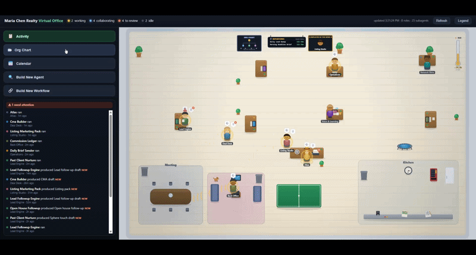

AI agents for real estate
Scale yourself with agents, so you can focus on closing deals. Buy it, download it, and it sets itself up. No call to book, no demo to sit through.
You still carry your own pipeline and want leverage without hiring an assistant.
See the Solo Kit, $497 →You supervise the agents and the pipeline. You don't carry your own deals.
See the Broker Kit, $1,997 →Solo Kit · $497 once
A team of 23 AI specialists you drop into Claude Code. On day one they interview you like a sharp new hire, then go to work: a personalized first touch on every new lead within minutes, the full open-to-close timeline on every deal, a six-piece marketing pack for a new listing in five minutes instead of four hours. They learn your voice from your edits and sound like you by week two.
The problem you already know
You bought Lofty, or Follow Up Boss, or kvCORE. It is a good CRM. It captures leads, runs your drips, hosts your IDX site.
What it does not do: write your follow-up in your voice, track 180 tasks across a dozen live deals, turn one listing into an MLS description plus three social posts plus a sphere email in five minutes, thank every open house visitor by name within the hour, or remember that the Hendersons hit their referral window at twelve months.
That is the work that decides your year. And right now it is all on you, after hours, when you are tired. That is the work Atlas does.
Meet the team
Six do the client-facing work that grows revenue. Seven run the back office that protects it. Ten keep the network learning and pruning on its own. You talk to Atlas. Atlas routes everything else, and builds new specialists as your work reveals the need.
Mileage tracking that finds the deductions you lose every year. A daily watch on NAR and your state association for rule changes. A vendor rolodex you trust. A commission ledger that shows what cash lands this week. CE hours tracked against your renewal. A Monday business pulse. A CPA-ready tax package every December.
Orchestration, voice learning, todo grooming, impact tracking, and the self-maintenance that keeps the network from sprawling. You never see most of it. That is the point.
See your team at work
Atlas ships with a Virtual Office you open from a shortcut on your desktop. It is your network rendered as a floor plan, branded with your name, not ours. Leads and sphere in one room, active deals in another, listing marketing, the back office, the learning floor where your voice gets tuned.
You can see which specialists are working, what they produced overnight, and what is waiting for your review. It is the difference between trusting a black box and watching your team on the floor.
One double-click. It runs entirely on your laptop.

A real Atlas Virtual Office, branded to the agent, showing the team at work.
Day one is the difference
A real assistant needs a quarter before they know your voice, your market, and your standards. Atlas compresses that to four weeks, and you watch it happen.
Every external action stays staged for your approval through the build. That friction is not a limitation. It is how the network learns to sound like you instead of guessing.
And it never stops growing. When the same task shows up three times in your week, Atlas proposes a new specialist for it. You approve, the network gets stronger. Twenty-three is where you start, not where you finish.
Who this is for
Who this is NOT for, and we mean it
How buying works
The moment you check out, you get the kit and a one-page start guide. No call to schedule, no onboarding consultant, no waiting on us to set you up.
You open it inside Claude Code and Atlas runs the setup conversation itself, the way a sharp new hire would on day one. By the time you close the laptop, your team is configured to your business and three to five specialists are already live.
The only people in this are you and your clients. There is no call, because there does not need to be one.
What it costs
No Atlas subscription. No per-seat fee. No "lite" tier holding features hostage. You bring your own Claude subscription (from $20 a month) plus a few dollars of API usage for scheduled jobs. That is the only ongoing cost.
Frequently asked
You follow an afternoon of guided setup. If you have ever set up a CRM email filter or signed a document in DocuSign, you can do this.
A desktop app from Anthropic, the company behind Claude, that runs your team on your laptop. You install it during setup. It needs a Claude subscription, which starts at $20 a month.
On your laptop. Atlas runs no servers, keeps no analytics, and collects no telemetry. Model calls go through your own Anthropic account. We never see them.
No. It works alongside Follow Up Boss, kvCORE, Lofty, and the rest. Your CRM stays the source of truth. Atlas is the draft layer, the transaction layer, and the voice layer on top.
Every drafting specialist has fair-housing compliance built in. Language touching protected classes gets flagged and replaced with a neutral alternative. It is a backstop, not a replacement for your professional judgment.
30-day refund. Reply to your receipt email. No questions, no friction.
"Atlas just did it!!! EPIC!!!!!! Playing with it further; super cool, thank you thank you thank you!"
Neil Paine, Broker, Sotheby's International Realty
Broker Kit · $1,997 once · for small teams
The Broker Kit puts a virtual sales manager between your agents and your CRM. Your team keeps working the way they already do, by text, email, and phone. The client messages the kit runs and the updates your agents report get logged to your team's CRM automatically. So when an agent leaves, the relationship history stays with the team, and whoever picks it up starts mid-thread instead of from zero.
It also gives you a live view of every agent's pipeline, a standardized weekly scorecard on each one, and an alert the moment a lead or deal goes cold.
The collapse happens after the lead is assigned
The handoff dies in an email the agent never opens. The pipeline goes dark because nobody updates the CRM. Sphere and cold-call leads never enter the system at all. A handful of agents each carrying a dozen live deals is more than any team lead can hold in their head between Monday meetings.
Agents change nothing. They stay on their own phone, their own email, the tools they already use.
The reason team leads actually buy
Almost every team lead has watched a producer leave and walk out with their phone and their threads. You kept a contact record and nothing else, and the relationship was gone. On a small team, losing one rainmaker that way can take a real piece of the year with it.
This kit closes that hole. Every message the kit runs, and every update your agents report, logs to your CRM as it happens. When an agent leaves, the history stays. That is not a feature on a list. That is the reason you buy it.
No pilot, no sales call
A new sales manager would take a quarter to learn your team. The Broker Kit gets there in four weeks, and you watch it happen.
Everything client-facing stays staged for your approval through the build, with one exception you approve at install: the confirmation message that fires when a lead is assigned. No consultant, no statement of work, no calls to book. You buy it and start.
What it costs
The kit, the full setup playbook, and free updates for life. No per-seat fee, no Atlas subscription. You bring your own Claude subscription (from $20 a month) and a few dollars of API usage. Client confirmations send by email from your team's own Gmail or Outlook, so there is no extra messaging cost. Nothing else.
"Atlas just did it!!! EPIC!!!!!! Playing with it further; super cool, thank you thank you thank you!"
Neil Paine, Broker, Sotheby's International Realty